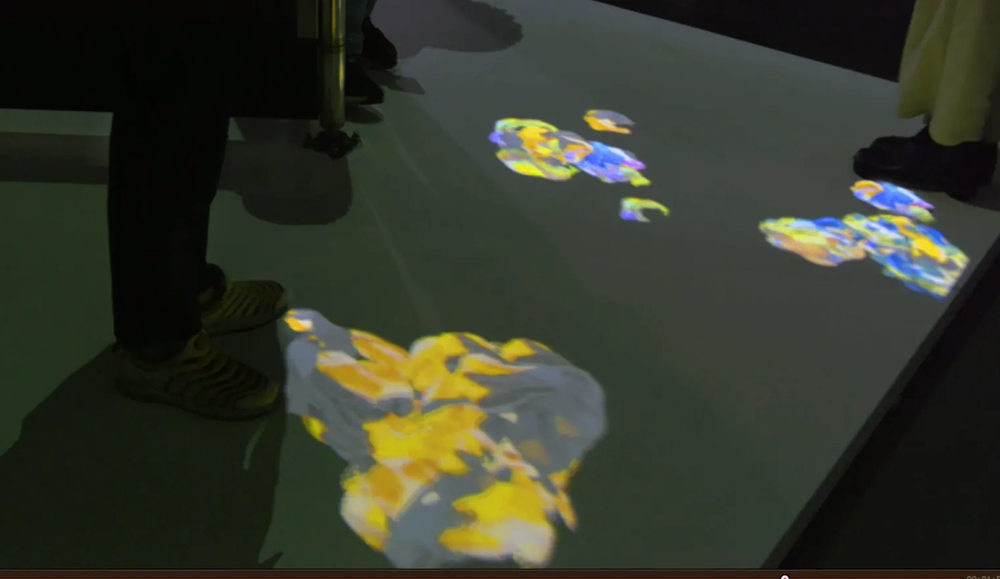
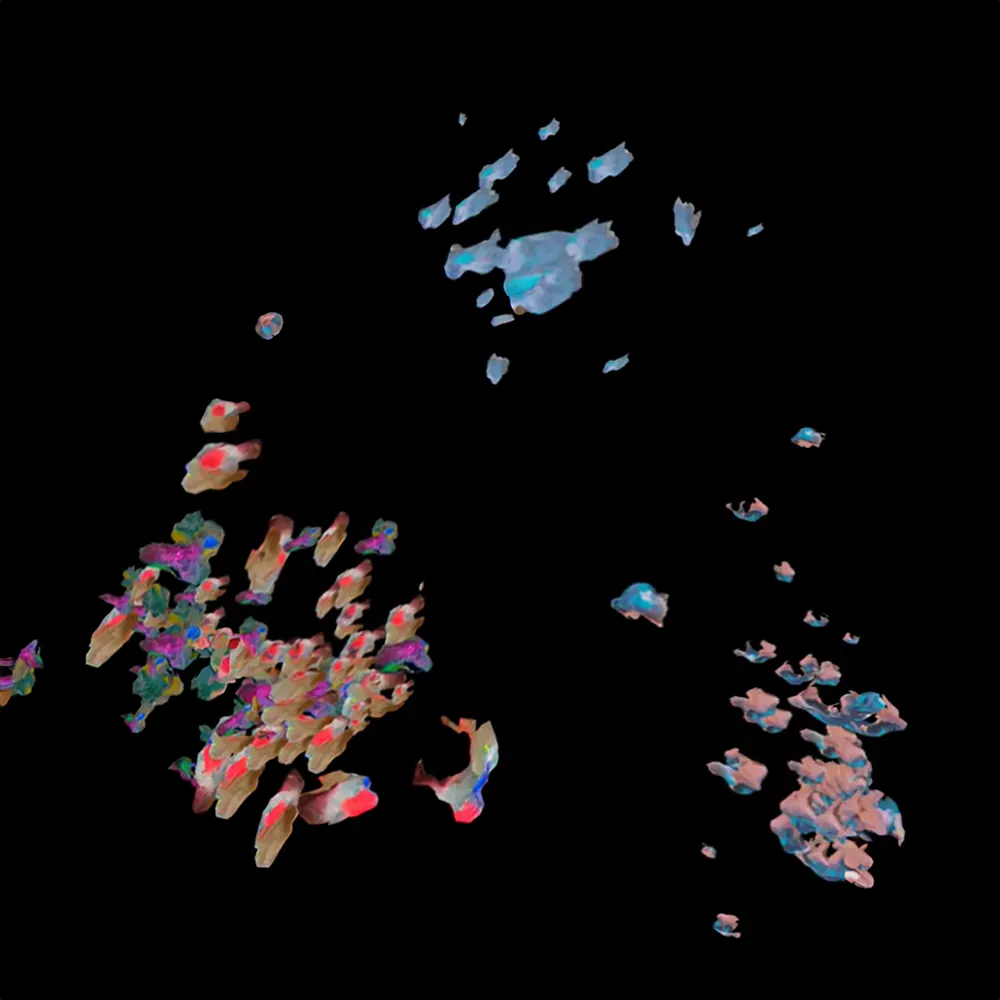
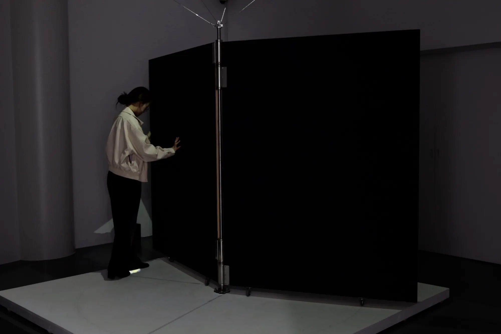
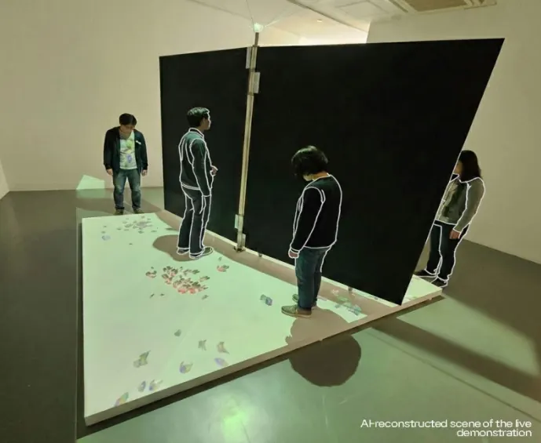

Flow and Shield
Interactive installation, 2024
- Shown at
- Artience Daejeon 2024, Daejeon Culture and Arts Foundation × KRIBB, Daejeon, 2024.10
- Materials
- PC, projector, Kinect sensor, rotating wooden installation, live screening, sound, variable dimensions
- In collaboration with
- Hyun Seung-cheol (technology), Philip Liu (sound), BAUMHAND (woodwork)

Flow and Shield is an interactive installation that explores themes of viruses and immunity, where desire is understood as a force that spreads, transforms, and mutates across bodies, media environments, and collective imagination.
Visitors physically interact with a rotating wooden structure, pushing and pulling it with their bodies to generate virus-like digital forms in real time. The structure also functions as a system of defence and release: participants can either protect their desire-objects by controlling the structure, or let them re-enter the field of contagion.
The projected entities on the floor recognise multiple participants at once. The most dominant entity gradually absorbs and transforms the others through a process of viral assimilation; weaker entities are drawn into its influence and partially integrated. At times a single dominant entity remains on the surface, shaped by continuous competition and adaptation within the system.
When a participant is detected by the camera, corresponding sounds are triggered, creating a responsive environment where movement, image, sound, and bodily interaction continuously affect one another.


